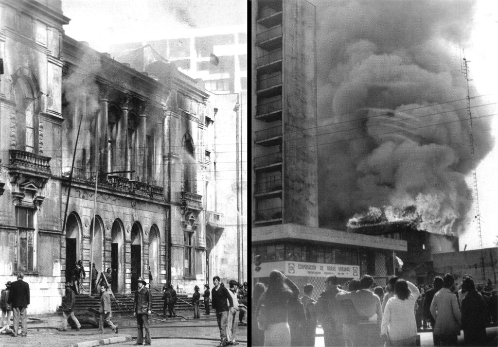
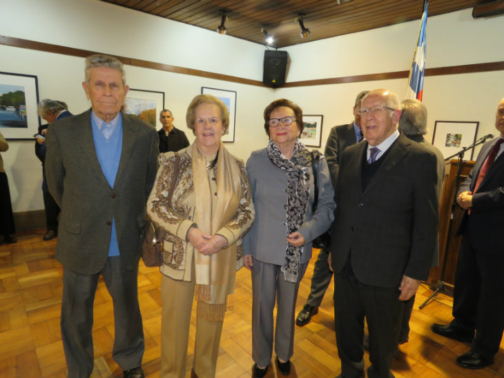
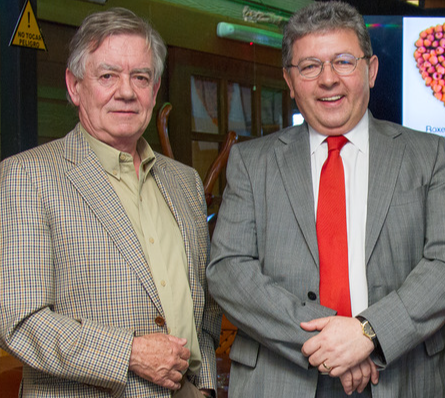

¿Cómo tuvo la idea de construir un nuevo teatro? Era una pregunta infaltable en mi entrevista a King. Pero lo que más me intrigaba era saber cómo había logrado tanto apoyo para esta iniciativa desde un principio. “¿Cómo me involucré en este proyecto?, incluso a mí me sorprende”. Así empezó su relato. “Fue algo fortuito, cosa del azar, resultado de un encuentro no previsto ni buscado. Un simple minuto de diferencia o de ir o no ir por la calle Barros Arana y sería otra la historia.
Como sabes, soy abogado y, tras concluir un alegato en la Corte, mientras me liberaba mentalmente del esfuerzo de vencer con argumentos al abogado de la parte contraria, experimenté una satisfacción palpable al sentir que había ganado la causa. Incluso el ministro redactor, quien solía simular estar dormido para fastidiar a los abogados, mostró especial atención hacia mí. Al salir del Palacio de los Tribunales, en mi camino de regreso a la oficina, fui abordado por un periodista, colega tuyo, del Diario El Sur de Concepción.
Después de saludarme, me solicitó una opinión sobre el centralismo que tanto perjudica a las regiones en comparación con la capital, Santiago. Sin saber por qué, y quizás influenciado por ese ánimo de argumentar algo opuesto a lo alegado por la parte contraria reciente, respondí que existía algo de verdad en la implicación de su pregunta. No obstante, señalé que la mayor responsabilidad recaía en nosotros, los regionalistas quejumbrosos, que sólo alegamos sin asumir la iniciativa de lo que podríamos lograr por nosotros mismos. Entonces, surgió la pregunta sobre si podría ejemplificar con un caso concreto lo que podríamos hacer, pero que no estábamos haciendo.


Recuerdo claramente ese momento, en medio de la calle, rodeado de personas que iban y venían, con mi maletín que contenía los documentos citados y el alegato en la mano. No sé exactamente por qué, casi sin pensarlo, le respondí: Construir un teatro para reemplazar el que quedó inutilizado después del terremoto del año 60 y añadí que era una vergüenza que una ciudad como Concepción estuviera sin teatro durante 34 años.
LOS INICIOS
Bueno, ahí está el comienzo de una andadura que nunca anticipamos y que, si la hubiéramos imaginado, es probable que nuestras palabras hubieran sido distintas, porque El Diario El Sur lo publicó y ocurrió lo impensable, por lo menos, para mí.
La primera persona que se puso en contacto conmigo fue Rolendio Pacheco, un empleado del Servicio de Impuestos Internos con una voz de tenor ligero que participaba en zarzuelas y operetas. Me instó a perseverar en la propuesta y a reunir vecinos que respaldaran la iniciativa. Rolendio, me llamó por segunda vez, ya entusiasmado con la idea que había compartido con sus amigos cantantes y músicos. Me expresó que "creían", hablando en plural, que me correspondía liderar esta causa cultural y convocar a otras personas para abogar por un escenario digno y profesional para la región. En los días siguientes, cada vez más personas se sumaron a la conversación, resaltando la necesidad de organizarnos para construir un nuevo y moderno teatro para Concepción.
Barros Arana con Orompello, lugar donde estuvo el Teatro Concepción.
Carlos Von Plessing se sumó de inmediato. Él había sido Rector de la Universidad de Concepción cuando el hermoso teatro de esta institución fue demolido en 1976 por las autoridades y adoptó de inmediato la misión de hacer todo lo posible para restituir a la ciudad un edificio para las artes tan magnífico como aquél que le fue imposible defender.
Antiguo Teatro Concepción en Barros Arana con Orompello.
Incendio del Teatro Concepción en 1973.
Deteriorado por el terremoto de 1960, el edificio fue abandonado durante 13 años hasta que, en la mañana del 21 de septiembre de 1973, fue arrasado por un voraz incendio. Se trabajó por el sector de Orompello, evitando que el fuego se propagara hacia las casas del frente, labor apoyada por la 2° y 4° compañías de bomberos. A cargo se encontraba el voluntario, Capitán Uwe Schotte. Una vez sofocado el siniestro, aproximadamente a las 18:00 horas, el ejército decidió poner explosivos en el escenario para derribarlo, ya que había quedado en muy malas condiciones. Para tales efectos, le solicitaron a los bomberos que enfriaran los muros para poder poner las cargas, las que se colocaron, posteriormente, en una gran viga que dividía el primero del resto de los pisos. Detonaron el explosivo, pero no pasó nada, excepto que se reventaron todos los vidrios de varios edificios de los sectores aledaños (https://septima.com/2020/05/el-incendio-del-teatro-concepcion/). La demolición se concretó en 1976 y no fue fácil, como si el teatro aún hubiese querido permanecer en su solar. Por años permaneció el sitio vacío hasta la venta del terreno para la construcción del actual Mall del Centro, inaugurado el 3 de octubre de 2012.
Previo a la conformación de la Asamblea Constituyente de la Corporación, tuvimos numerosas conversaciones, tanto sobre las acciones que debían emprenderse como sobre la historia teatral de Concepción. Se mencionó el Teatro Galán del siglo XIX, también llamado Teatro Provincial, ubicado en la calle Freire alrededor del número 600, entre Caupolicán y Aníbal Pinto. Estuvo activo 26 años, desde su inauguración en 1856 hasta que también fue afectado por un incendio en 1882. Asimismo, se discutió el esfuerzo llevado a cabo por aquellos que lograron erigir el magnífico Teatro Concepción entre 1985 y octubre de 1890, cuando fue fundado, gracias a los esfuerzos de las juntas vecinales de la ciudad, que no contaban con el apoyo gubernamental de ese entonces.
De esta manera, se fueron sumando los vecinos que anhelaban algo destacado para la ciudad, para la región e, incluso, para Chile. Te nombraré a alguno de los primeros en unirse, aunque me quedaré corto de tiempo para nombrarlos a todos, así es que pido disculpas de antemano. Estaban el doctor Carlos Martínez Gaensly, quien había asistido en innumerables ocasiones al viejo teatro, conservando, incluso, recuerdos físicos de su querido escenario, como algunas butacas y unas zapatillas que, posiblemente, habrían pertenecido a la célebre Pavlova del Ballet Imperial de Rusia, recordada como una de las presentaciones de mayor jerarquía que se hizo en el Teatro Concepción; Tito Ansaldo Benvenuto, quien, dentro de sus posibilidades, apoyaba a artistas jóvenes; Mercedes Pujol, directora del Instituto Norteamericano de Cultura, donde se esforzaba por proporcionar espacios para exposiciones de pintura y otras manifestaciones artísticas; Ricardo Spoerer O’Reilly, entonces presidente del Club Concepción, quien permitió que quienes empezábamos a trabajar en esta iniciativa vecinal, nos congregáramos en ese espacio céntrico; Carlos Bustamante Bonelli, maestro de canto y antiguo instructor de los más destacados cantantes líricos de Chile; Eduardo Meissner Grebe, considerado uno de los más importantes pintores de la región y Chile, dejando un legado artístico que ha trascendido y sigue siendo apreciado por las nuevas generaciones; Annemrie Maack Moller, periodista conocida por su compromiso con la cobertura de noticias culturales y artísticas y Directora de Comunicaciones y Extensión de la Universidad del Bío-Bío en ese entonces; Werner Stehr Wilckens, considerado uno de los arquitectos más influyentes de la región, quien, además de su trabajo como arquitecto, ha sido un activo participante en la comunidad local, colaborando con organizaciones culturales y educativas.
En fin, quedan varios nombres fuera del tintero, lamentablemente. Por eso, encuentro tan necesario un memorial que reconozca a todas estas personas que de forma desinteresada y anónima hicieron posible que esta cruzada cultural tuviese éxito.
Doctor Carlos Martínez Gaensly.

Ramón Páez, Mercedes Pujol, Gloria Muñoz y Hernán Varela.
Werner Stehr y Héctor Gaete, Rector de la UBB.
EL NOMBRE PENCOPOLITANO
“Este deseo de hacer algo” de todos quienes ya habían mostrado su inquietud por la carencia de un escenario moderno y profesional, se concretó en una reunión en el Club Concepción, ofrecido a ese fin por su presidente Ricardo Spoerer. Una tarde del año 1994, llegaron sesenta y cuatro vecinos. No se esperaban tantos y hubo que buscar más sillas para que todos estuvieran cómodos. El ambiente era especial, cada cual fue expresando de distintos modos que Concepción, ciudad universitaria, con orquesta sinfónica con grupos de teatro, reconocidos cantantes líricos y populares no debía seguir sin un teatro como el perdido en la década del 70. Todos mostraban sentimiento de nostalgia por lo que había habido, por los gratos momentos que allí habían vivido. La voluntad por trabajar juntos por un nuevo recinto, fue unánime.
Eduardo Meissner Grebe y Rosmarie Prim Becker.
Y cómo hacerlo, la respuesta fue una corporación sin fines de lucro, formada por vecinos de la región, algo muy similar a lo sucedido en 1885, después de la destrucción del Teatro Galán. Lo primero a definir fue el nombre. Eduardo Meissner fue el primero en hacer una proposición: Corporación Teatro Pencopolitano debería llamarse. Y dio varios argumentos y fundamentos históricos para este gentilicio. Entre ellos, el uso de él desde los inicios de la ciudad, con la fundación de la Real y Pontificia Universidad Pencopolitana de La Concepción que funcionó entre los años 1724 y 1767, administrada por los Jesuitas. Aún recuerdo cómo terminó su exposición. Enfatizó que era un nombre contundente, que singularizaría al futuro teatro. El nombre no se discutió. Eduardo tenía autoridad para lo que proponía: Como músico, había fundado la Orquesta Sinfónica de Concepción; como pintor, sus cuadros merecían una pinacoteca especial y, como si fuera poco, además, era un escritor erudito. Así que ése fue nuestro primer acuerdo: el nombre, Corporación Teatro Pencopolitano y el teatro, una vez construido, habría de llamarse así.
El segundo acuerdo fue, que la corporación debería ser dirigida y representada por un directorio de 16 personas: un presidente, cuatro vicepresidentes, un tesorero, un secretario y nueve directores. La presidencia me correspondió; las vicepresidencias, al Dr. Carlos Martínez Gaensly, Ricardo Spoerer O´Reilly, Cárlos Von Plessing Baentsch y Mercedes Pujol; como tesorero fue elegido Tito Ansaldo Benvenuto; como secretario, Juan Carlos Martínez Aguayo, y directores, Carlos Bustamante Bonelli, Adriano Cecioni Raspi, Antonio Celis San Félix, Marcelo Contreras Hauser, Alicia Estrada Roa, Annemarie Maack Möller, Eduardo Meissner Grebe, Werner Stehr Wilckens y Eduardo Zúñiga Ivani. Se acordó que las sesiones de Directorio serían en el mismo Club Concepción.
El Directorio se constituyó un jueves en la tarde en el lugar acordado. Sus primeras resoluciones fueron relativas al funcionamiento, días de sesiones, el lugar, el tema de las cuotas sociales, la obtención de personalidad jurídica y demás similares. Comenzaron las opiniones que apuntaban a la concreción del objetivo para el cual estábamos reunidos y ya trabajando. Respecto de la futura ubicación del recinto, había consenso de que debería estar en el mismo lugar del desaparecido Teatro Concepción. Habría que contactar con la Universidad de Concepción, dueña del sitio. También debería contratarse experto para resolver el cómo debería ser el teatro, tipo de arquitectura, capacidad de público y demás. Y el tema inevitable: cómo obtener los recursos para su construcción, lo que se divisaba como lo más difícil de conseguir.
El abogado Marcelo Contreras Hauser.
Annemarie Maack y Ricardo Hempel.
Pero había voluntad para emprender todas las tareas y cumplirlas. Se configuraron cuatro comisiones para dividir el trabajo y hacer realidad el objetivo común. Marcelo Contreras Hauser, quedó encargado de ver el tema de los estatutos de la Corporación y obtener la personalidad jurídica necesaria; Alicia Estrada Roa, Eduardo Meissner Grebe y Annemarie Maack Möller, se hicieron cargo de la difusión; Antonio Celis San Félix y Werner Stehr Wilckens se harían cargo del tema del proyecto arquitectónico.
Al término de esta primera reunión, me fui con una sensación difícil de definir, con esa voz interior que te dice “en qué me he metido”. No quería fallar a quienes habían tenido la fe absoluta en que el teatro se iba a construir, al igual que en 1890, cuando los vecinos de una ciudad de tan sólo 35.000 habitantes, lo habían logrado. Otros tiempos, otras realidades. Habría que encontrar el modo de no fracasar”.